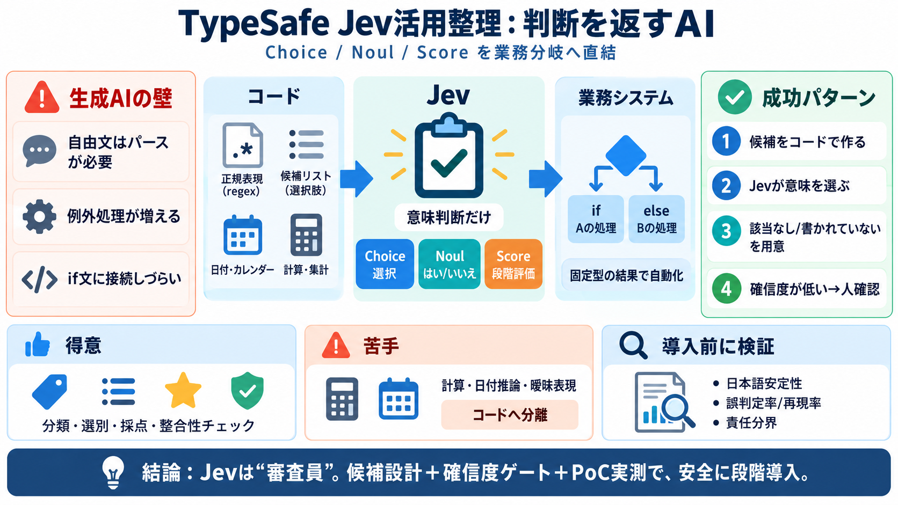

LLMの代わりになる？ 文章を生成しないAI「Jev」を日本語で ... - Qiita
2026年9月18日に確認した公表料金では、入力100万トークン当たり0.042ドルで、出力は無料です。9 仮に、1回の課金対象入力が1,000トークンなら、計算は次のようになります。 ``` 1回 : 1,000 / 1,000,00…

判断を返すAI
Jev（System Oneモデル）は「文章生成」ではなく「選択肢・確率・点数」といった判断結果を返すAIです。本記事の要点を、業務導入の視点で圧縮して整理します。
生成AIの壁
LLMで文章を作ると、後段でパース・解釈・例外処理が増え、業務システムに接続しづらくなります。
「自由文」→「判定ロジック」への変換コストが高い
分岐に使える固定フォーマット（選択肢・確率・点数）
役割分担
投稿の核は「計算はコード」「意味判断はJev」という分業です。コードが候補を作り、Jevは“意味”だけを選びます。
選別の目
Jevは“文章を作る脳”ではなく、“審査員”として選択肢から最も適切な判断を返すイメージです。
順序なし・正解が1つに決まる
二値で決められる
段階評価（順序あり）
自動/人確認の分岐に使う
10ユースケース
記事では、分類・抽出・採点・整合性チェックまで含めた10例が示されています（文章生成ではなく判断結果）。
問い合わせの振り分け
予約の操作種別抽出
メール文面から請求金額を選ぶ
社内FAQの並び替え/再順位付け
改善提案を複数観点でスコア化
アンケート自由記述の分類
RAG回答の根拠整合性チェック
入力ガードレール（不正/逸脱の検出）
企画書のコンプライアンス一次チェック
議事録から決定事項/ToDo抽出
聞き方が命
同じタスクでも、指示の“距離感”で結果が変わります。遠回しだと「該当なし」寄りになり、直接的だと正解に近づきました。
「まだ払う必要がある金額」
「この請求メールの請求金額」
設計手順
精度を上げるには、(i)候補抽出をコード側で用意し、(ii)Jevには意味判断だけをさせ、(iii)曖昧さは安全側の選択肢で受け止めます。
得意/不得意
投稿の整合的な方針は「計算・日付推論はコード」「意味判断はJev」です。Jevの弱点領域を避けるほど安定します。
分類・選別・採点・整合性チェック（意味判断）
計算・日付などの推論、曖昧表現の扱い
誤判定対策
安全設計は「該当なし/書かれていない」選択肢と「確信度ゲート」を組み合わせて成立します。誤って断定しないことが鍵です。
「書かれていない」を入れ、確認漏れを抽出
確信度が低い/割れたら人確認へ回す
導入前に
投稿には注意点があります。日本語対応は公式に明記されていないため、成功が入力設計に依存する可能性があります。
誤判定率/再現率/業務KPI影響の“実測”が十分に見えない
日本語データは常に正確とは言い切れず、要検証
推論が苦手な領域はコードへ寄せる前提
法的判断と混同せず、最終判断体制は別途整理が必要
費用と統制
トークン従量課金を前提に、1リクエストをまとめる方針が示唆されています。同時に、監査ログやデータ分類などガバナンスが必要になります。
結論
Jevは“文章生成AI”ではなく“判断AI”。候補はコードで作り、Jevは意味判断（Choice/Noul/Score）に限定し、確信度で人確認を設計するのが最短ルートです。
生成ではなく判断結果を返す → 業務分岐へ直結
選択肢設計（該当なし/書かれていない）と指示の距離感
確信度ゲート＋PoCで実測（誤判定率/再現率）
日本語の安定性や法的責任分界は別途検討が必要
References（本デッキ参照元）：ユーザー提示の投稿要約（Jevの特徴、10ユースケース、設計コツ/限界/FAQ、評価・批判的観点、費用/運用の記述）。
2026年9月18日に確認した公表料金では、入力100万トークン当たり0.042ドルで、出力は無料です。9 仮に、1回の課金対象入力が1,000トークンなら、計算は次のようになります。 ``` 1回 : 1,000 / 1,000,00…
この `Choice` は、「入力を受け取って、あらかじめ決めた選択肢の中から1つ選ぶ」というタスクそのものなので、NeMo Switchyardの「simple/medium/complex/reasoningのどれかに分類する」というc…
API keys live in the console too, under API Keys. Usage shows your token consumption. If you don’t want to wait on the …
TypeSafe prices Jev's input tokens at $0.042 per million tokens, compared to the $0.20 to $10 range charged by leading L…
> 💡 System One models evaluate every question in a request in parallel. Adding questions barely changes the response tim…